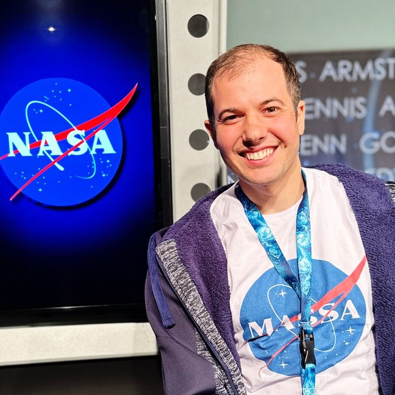

Eduardo Ritter | WDD 130

Hello! My name is Eduardo Ritter and I am from Brazil. I am a software developer passionate about building web applications and working with artificial intelligence. I am taking WDD 130 to strengthen my web development fundamentals. In my free time I enjoy learning new technologies and creating projects of my own.